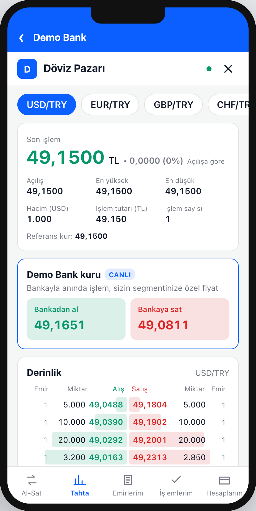
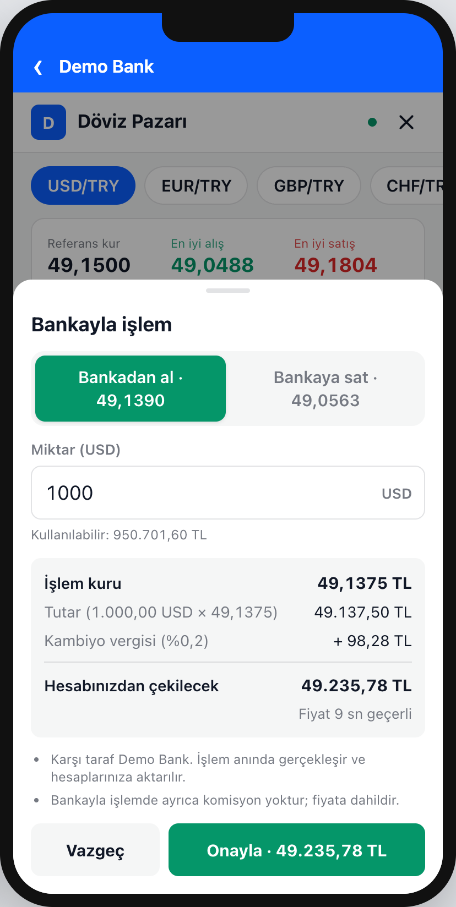
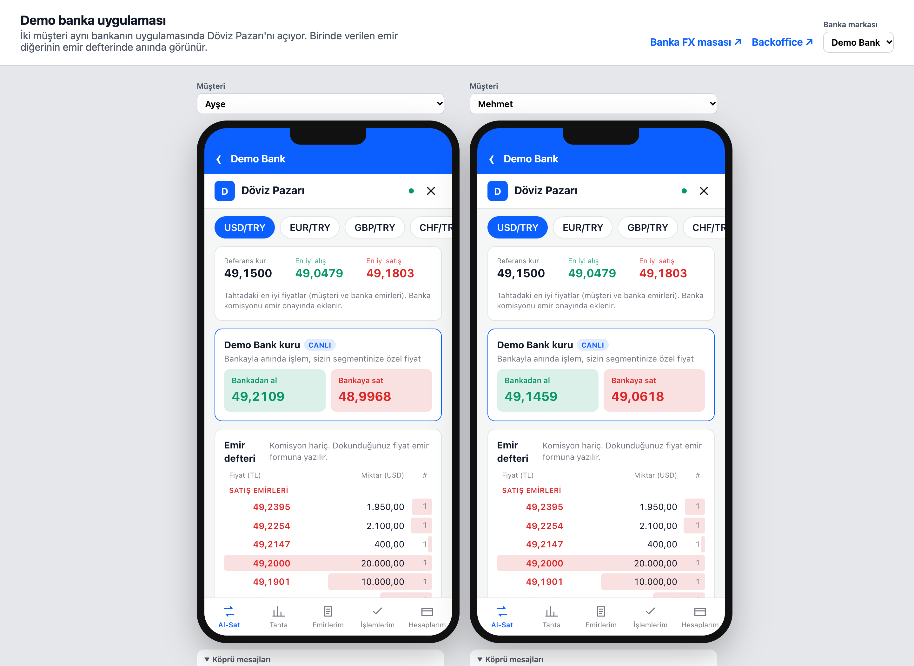
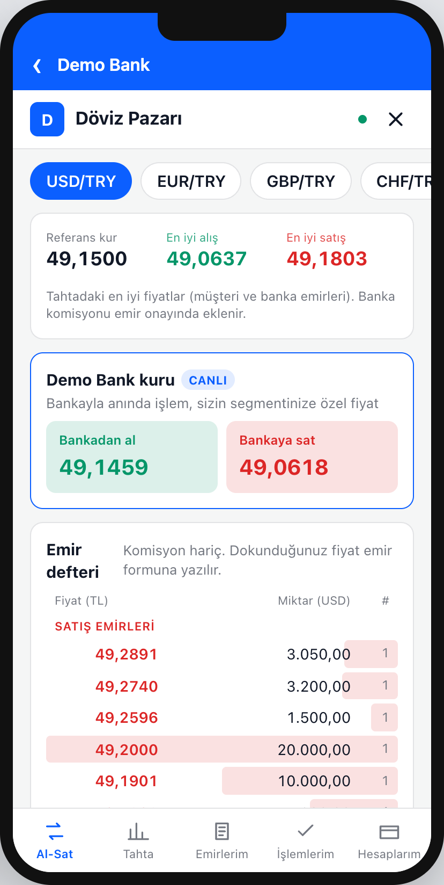
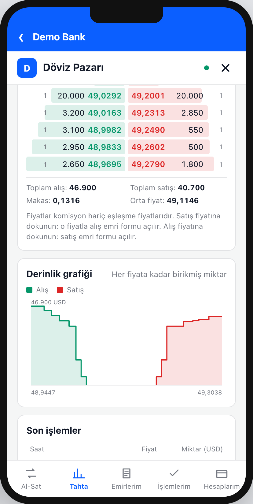
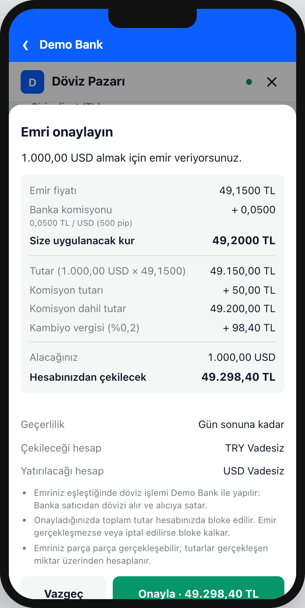
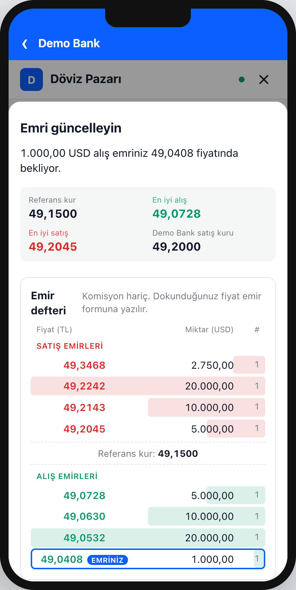
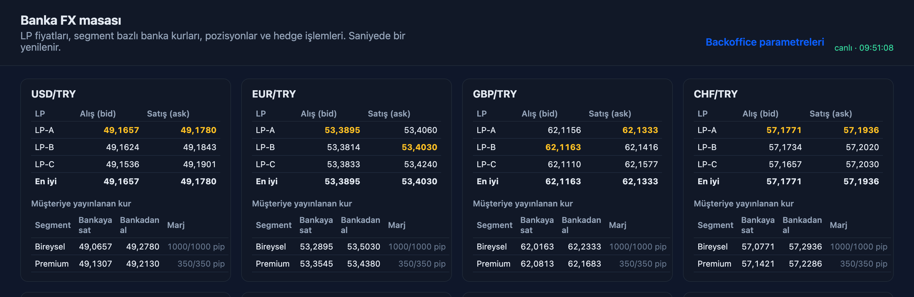
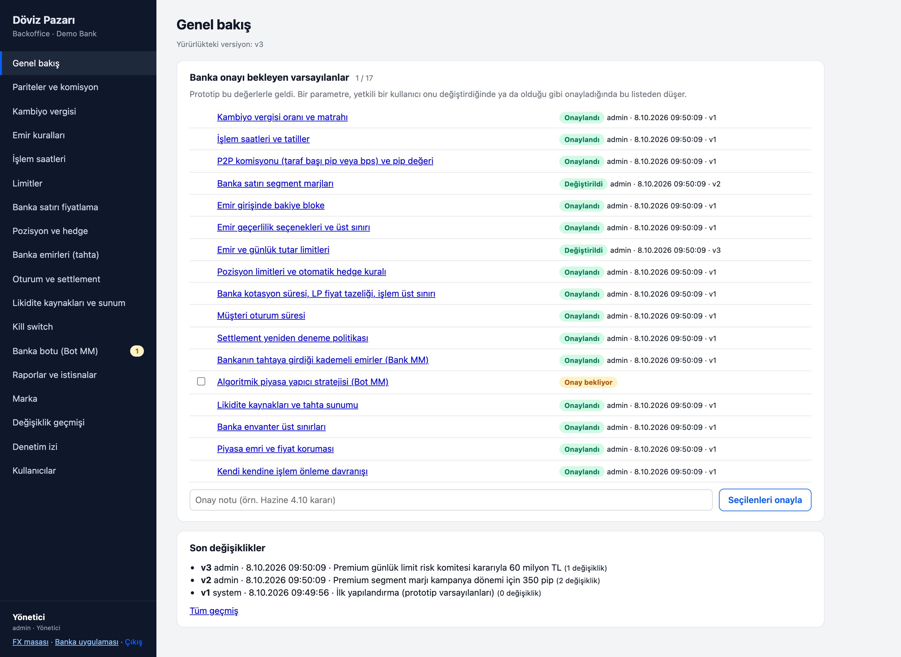

Bireysel müşteri kendi kurunu belirler, banka karşı taraf olur. Banka kur riski almadan iki taraftan komisyon kazanır; p2pFX bu altyapıyı white-label olarak sağlar.


Banka kurundan işlem yapar ya da hiç yapmaz. "Şu fiyattan satarım" diyebileceği, emrini bekletebileceği bir kanal yok.
Daha iyi fiyat arayan müşteri döviz bürosuna, tanıdığa veya kayıt dışı kanallara gider; banka ilişki ve mevduat kaybeder.
Döviz ekranları birbirine benzer; banka kurundan her işlem ayrıca pozisyon ve hedge maliyeti yaratır.

Müşteri emrini kendi fiyatından verir; gün sonuna, bir tarihe ya da iptal edene kadar bekletir.
Emirler eşleşince banka iki işlem yapar: satıcıdan alır, alıcıya satar. Pozisyon net sıfır.
İki taraftan komisyon, kambiyo vergisi ve dekont bankanın mevcut döviz süreçleriyle.
Beklemek istemeyen müşteri bankanın segment kuruyla anında işlem yapar.






Komisyon, vergi, bloke politikası, işlem saatleri, segment limitleri ve marjlar yeniden başlatma olmadan değiştirilir. Bankanın satın aldığı şey yalnızca bir ekran değil, işletilebilir bir masa.
| Alıcı | Satıcı | |
|---|---|---|
| Kitap fiyatı | 49,1500 | 49,1500 |
| Komisyon (500 pip) | + 0,0500 | − 0,0500 |
| Uygulanan kur | 49,2000 | 49,1000 |
| Banka pozisyonu | −1.000 USD | +1.000 USD |
| Bankanın geliri | 100,00 TL · net pozisyon 0 | |
Taraf başına pip cinsinden; varsayılan 500 pip = 0,05 TL / USD. Eşleşme başına alıcı + satıcı. Kur riski yok.
Karşı emir beklemeyen müşteriye segment bazlı kur (prototipte bireysel 1000, premium 400 pip). Pozisyon otomatik hedge ile yönetilir.
Yalnızca P2P komisyonu (500 + 500 pip = 0,10 TL / USD), banka kuru marjı hariç. Hacimler varsayımsaldır; banka bazında pilot verisiyle kalibre edilecektir.
| Senaryo | Aylık eşleşen hacim | Aylık komisyon | Yıllık komisyon |
|---|---|---|---|
| Pilot | 10 milyon USD | 1 milyon TL | 12 milyon TL |
| Orta ölçek banka | 50 milyon USD | 5 milyon TL | 60 milyon TL |
| Büyük banka | 200 milyon USD | 20 milyon TL | 240 milyon TL |
Hesap: hacim × 0,10 TL. Kambiyo vergisi gelir değildir, vergi hesabına aktarılır. EUR ve kıymetli maden pariteleri ayrıca eklenir.
Fiyatlama ilk banka görüşmelerinde netleştirilecektir.
Döviz alım-satım yetkili, mobil uygulaması olan mevduat ve katılım bankaları.
Kaynak: BDDK / TBB
Yurt içi yerleşik gerçek kişilerin döviz ve kıymetli maden mevduatı.
Kaynak: TCMB haftalık veriler
Aktif dijital bankacılık müşterisi; döviz işlemlerinin mobil payı.
Kaynak: TBB dijital bankacılık istatistikleri
Karşı taraf her zaman banka. Her eşleşme bankanın iki döviz işlemi ve dekontu; uyum ekipleri için yeni bir süreç yok.
Bankanın kendi kuru ve tahtaya koyduğu kademeli emirler sayesinde müşteri ilk günden işlem yapabilir.
LP birleştirme, segment kurları, pozisyon, K/Z ve otomatik hedge ürünün parçası.
Tüm parametreler backoffice'te, versiyonlu ve geri alınabilir; silinemez denetim izi.
WebView + köprü protokolü; iOS, Android, React Native. Aynı kod, her bankanın markası.
İdempotent kayıtlar, belirsiz sonuçta sorgulama, sabit noktalı para hesabı, tek kiracılı kurulum.
| Risk | Azaltım |
|---|---|
| Regülasyon ve vergi yorumu | Karşı taraf her zaman banka; kambiyo vergisi oranı, matrahı ve satıcı tarafı uygulaması ayar olarak tutulur ve bankanın uyum ekibiyle netleştirilir. |
| Likidite (boş tahta) | Bankanın segment kuru her zaman işlem imkânı sunar; banka tahtaya kademeli emirler koyabilir. |
| Uzun banka satış döngüsü | Tek komutla çalışan demo, banka ortamında hızlı kurulum, aşamalı pilot ve düşük limitli kapalı grup. |
| Temel bankacılık entegrasyonu | Tek bir adaptör arayüzü; zaman aşımında işlem sorgulanır, yarım kayıt bırakılmaz, operasyon kuyruğundan tekrar denenir. |
| Ölçek | Parite başına tek iş parçacıklı eşleştirme bireysel hacim için yeterli; okuma ve canlı yayın için yatay ek sunucular. |
Hedef: ilk bankada canlı pilot ve ikinci banka için referans vaka.